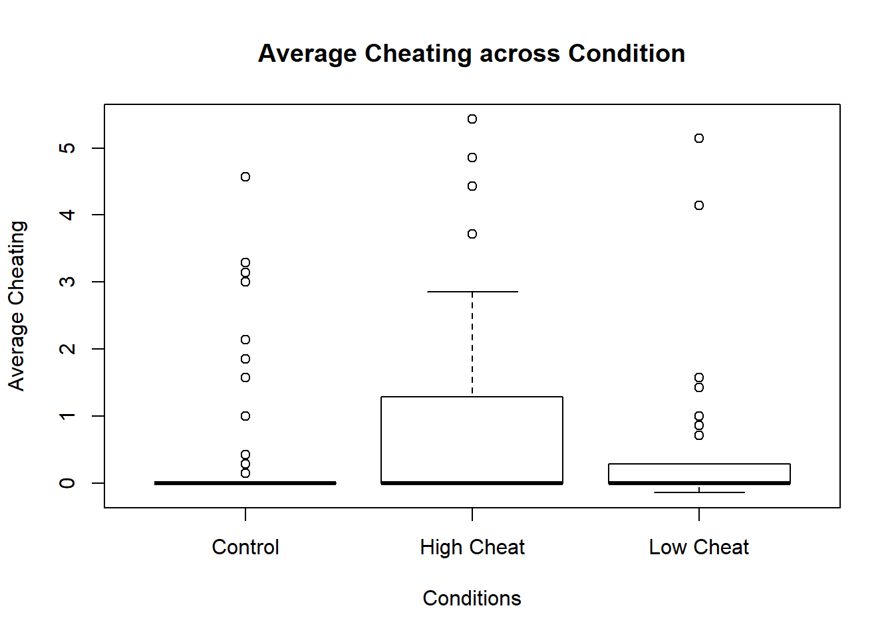

The data for this project will be from my BDS 501 group project - “When Leaders Cheat”. It was collected manually by my team by running an experiment on the Penn campus with undergraduate and postgraduate students. The data most essential to my project is the numerical results for the individual reported results, the category of treatment they were assigned and most importantly, their gender(which is collected in the post-survey). In the end, we had a total of 205 participants, which can be further broken down into 51 teams comprising of 51 leaders and 150 followers. For the purpose of my analysis, I have excluded 4 participants who reported “Prefer not to say” in the answer for gender, bringing my total observations to 146.
The relevant data which has been broadly organized by types and their respective categories can be seen in the table below:
| Data | Type |
|---|---|
| Participant ID | Categorical |
| Pre-survey Results | Ordinal/Categorical |
| Treatment Group | Categorical |
| Dice Results | Ratio |
| Individual reported results | Ratio |
| Team reported results | Ratio |
| Post-survey results | Ordinal/Categorical |
| Demographics | Categorical |
For our experiment, we utilize a repeated dice game, similar to the one used by d’Adda et al. (2017). The basic repeated game works in the following manner: in each round, followers privately roll a dice and then publicly report their dice roll (either accurately or not depending on the direction of their leader’s encouragement); the rounds proceed in the same way until the game is over. In our study, however, we modify this set up and procedure such that the dice game is played in teams of four individuals, i.e. three followers and one randomly assigned leader. The followers must report their (private) dice rolls to the leader, who then calculates the total team score i.e. the sum of the three follower’s reported dice roll. This set up is novel as leaders publicly calculate the team’s total performance, i.e. on a whiteboard, in order to make the leader’s actions directly observable by the entire team. Depending on the treatment, the leader either accurately calculates the correct team score, or he or she records an inflated team score by adding an additional small or large value to the team total. For simplicity and future reference, Condition 1 is the control condition, Condition 2 is the low cheat condition, and Condition 3 is the high cheat condition.
This table highlights the distribution of men and women across the three conditions - high cheat, low cheat and control:
##
## --------Summary descriptives table by 'Condition'---------
##
## __________________________________________________
## Control High Cheat Low Cheat N
## N=50 N=49 N=47
## ¯¯¯¯¯¯¯¯¯¯¯¯¯¯¯¯¯¯¯¯¯¯¯¯¯¯¯¯¯¯¯¯¯¯¯¯¯¯¯¯¯¯¯¯¯¯¯¯¯¯
## gender: 146
## Female 27 (54.0%) 24 (49.0%) 23 (48.9%)
## Male 23 (46.0%) 25 (51.0%) 24 (51.1%)
## age 21.9 (4.16) 21.5 (2.99) 21.7 (2.86) 145
## ¯¯¯¯¯¯¯¯¯¯¯¯¯¯¯¯¯¯¯¯¯¯¯¯¯¯¯¯¯¯¯¯¯¯¯¯¯¯¯¯¯¯¯¯¯¯¯¯¯¯Summary statistics of the average cheating per condition: 
## ### Descriptive Statistics
## **Variable:** MyData$avgcheat by Condition
##
## | | Control | High Cheat | Low Cheat |
## |------------:|--------:|-----------:|----------:|
## | **Mean** | 0.43 | 0.81 | 0.43 |
## | **Std.Dev** | 1.04 | 1.39 | 1.01 |
## | **Min** | 0.00 | 0.00 | -0.14 |
## | **Median** | 0.00 | 0.00 | 0.00 |
## | **Max** | 4.57 | 5.43 | 5.14 |
## | **IQR** | 0.00 | 1.29 | 0.29 |For the purposes of testing my first hypothesis, I conduct an ANOVA to see if there is any significant difference in average cheating by gender across all three conditions. Then, in order to check cheating behaviour by gender per condition, I will be using a two sample t-test. In a two-sample t-test, you compare the means of two groups of data and test whether or not they are the same. In this case, the two samples are the two genders - male and female. However, the t-test assumes normality of distribution, therefore I will also conduct a Wilcoxon ranked sum test for each condition, since it is a non-parametric test. To test my second hypothesis, I will conduct a t-test to look at the magnitude of cheating by followers based on gender. Due to the normality assumpition of a t-test, I will also conduct a Wilcoxon ranked sum test in this case as well.